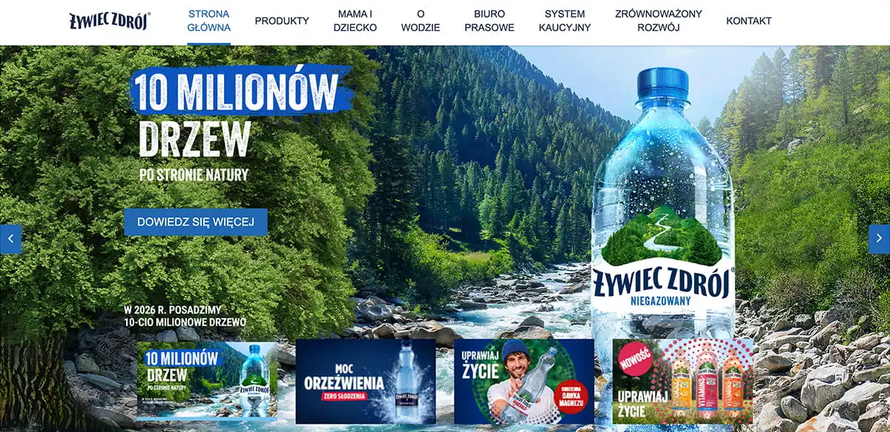

Project Stack
 Drupal
Drupal
HTML5
CSS3
Photoshop
Jira
2023 · Content Implementation & Pre-launch QA
Content structure, CMS build and quality assurance in Drupal — delivered in 2 months, aligned with strict brand guidelines.
Live Website
Drupal
Żywiec Zdrój needed a new corporate website ahead of a major brand refresh.
I joined the project during the final phase before go-live, when every page, asset and content block had to be implemented accurately in Drupal. The challenge wasn't just volume — it was consistency across product lines, legal copy and visual standards under a tight deadline.


The site launched on schedule with a clean, brand-compliant content layer ready for public release. My work ensured the Drupal implementation matched design specs and source content — so the dev team could focus on technical go-live tasks without content-related blockers.